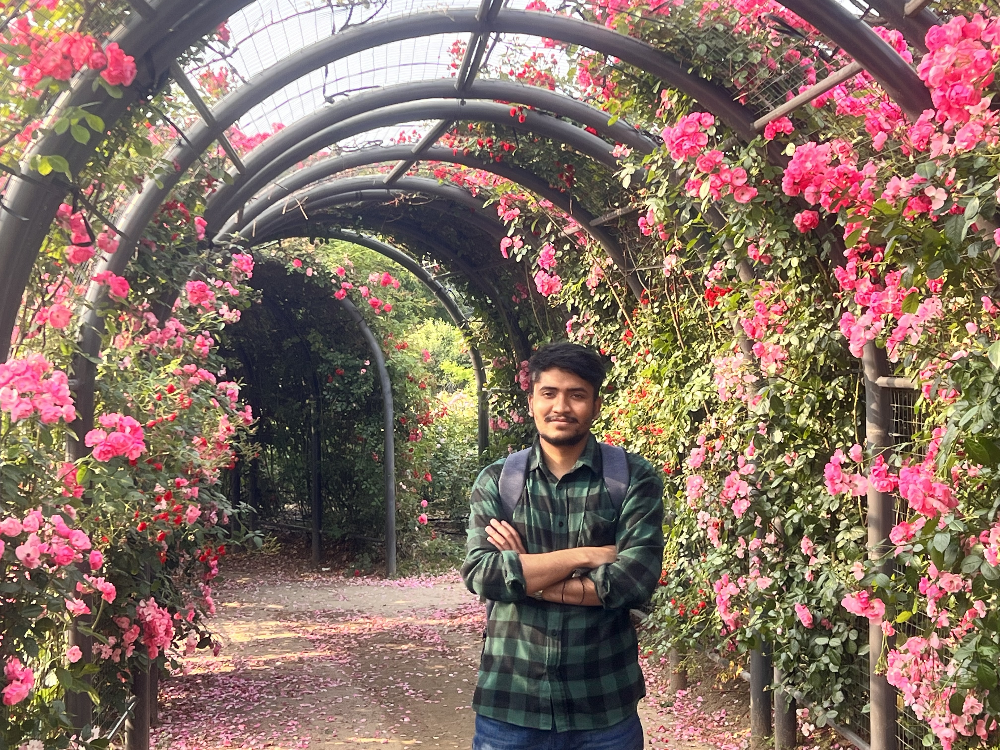

|
Kishor Kumar Bhaumik
Email /
CV /
Google Scholar /
GitHub /
LinkedIn
|
Hi, I'm Kishor!
I am a Master's student at Sungkyunkwan University, South Korea, majoring in Computer Science & Engineering. I received my bachelor's degree from Independent University, Bangladesh. I am currently working as a research assistant at DASH Lab and my research work is supervised by Prof. Simon Woo . I also had the opportunity to work as a RA at Center for Computational & Data Sciences (CCDS) Lab, Independent University, Bangladesh. My research focuses on Machine Learning, Computer Vision, Graph Neural Networks, NLP and Time Series.
I am actively seeking a PhD position!!
|

|
News
- [january 2024] Paper accepted in PAKDD'24 for oral!
- [December 2023] Paper accepted in ICASSP'24!
- [June 2023] Paper accepted in ICIP'23!
- [January 2023] Paper accepted in WACV'23 !
- [February 2022] Joined Dash Lab as a Graduate Research Assistant.
- [January 2022] Paper accepted in WACV'22 !
- [September 2021] Started Msc. in Sungkyunkwan University.
- [March 2020] Paper accepted in ECAI'20 !
- [October 2019] Started working at CCDS as a Research Assistant.
- [September 2019] Successfully defended my undergraduate senior project.
|
Source-Free Online Domain Adaptive Semantic Segmentation of Satellite Images Under Image Degradation
Fahim Faisal Niloy, Kishor Kumar Bhaumik, Simon S. Woo.
IEEE International Conference on Acoustics, Speech and Signal Processing, (ICASSP, 2024, South Korea).
|
HRFNet: High-Resolution Forgery Network for Localizing Satellite Image
Fahim Faisal Niloy, Kishor Kumar Bhaumik, Simon S. Woo.
IEEE International Conference on Image Processing (ICIP) 2023, Kuala Lumpur, Malaysia.
|
CFL-Net: Image Forgery Localization Using Contrastive Learning
Fahim Faisal Niloy, Kishor Kumar Bhaumik, Simon S. Woo.
IEEE/CVF Winter Conference on Applications of Computer Vision (WACV) 2023 ,Waikoloa, Hawaii.
|
Variational Stacked Local Attention Networks for Diverse Video Captioning
Tonmoay Deb, Akib Sadmanee, Kishor Kumar Bhaumik, Amin Ahsan Ali, M Ashraful Amin, AKM Rahman.
IEEE/CVF Winter Conference on Applications of Computer Vision (WACV) 2022.
|
Human Activity Recognition from Wearable Sensor Data Using Self-Attention
Saif Mahmud*, M. Tanjid Hasan Tonmoy*, Kishor Kumar Bhaumik,, A K M Mahbubur Rahman, M Ashraful Amin, Mohammad Shoyaib, Muhammad Asif Hossain Khan, Amin Ahsan Ali.
24th European Conference on Artificial Intelligence (ECAI), 2020.
|
Research Experience
- Research Assistant [February 2022 - Present]
Data-driven + AI + Security + HCI Lab (DASH Lab) , Sungyankun University,South Korea
- Research Assistant [January 2020 - September 2021]
Center for Computational & Data Sciences, Independent University, Bangladesh (CCDS @ IUB) ,Dhaka, Bangladesh
|
Education
- Independent University, Bangladesh [Jan 2016 - Dec 2019]
B.Sc. in Computer Science and Engineering (Got 100% tuition waiver in admission)
- Sungkyunkwan University, South Korea [September 2021- Present]
Msc. in Computer Science and Engineering, (Got full funded admission with monthly stipend)
|
|